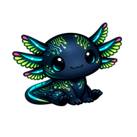

🔬Biología3 herramientas
1º ESOCiencias Naturales
Invertebrados
Los 6 grupos, sus superpoderes y los patrones que los conectan. Mapa interactivo y tarjetas.
🌐
1º ESOCiencias Naturales
Los 5 Reinos
Compara Moneras, Protistas, Hongos, Animales y Plantas. Qué comparten, qué los diferencia, ficha de cada reino.
🌿
1º ESOCiencias Naturales
Reino de las Plantas
Características, clasificación, partes, nutrición, tropismos y reproducción. Modo explorador y modo historia.
🇬🇧Inglés5 herramientas
🧱
ESOInglés
Grammar Builder
Construye oraciones pieza a pieza. El sistema gramatical como LEGO: cada pieza tiene su función y su sitio.
🎯
ESOInglés
Quiz de Verbos
Pon a prueba tu memoria de las familias de verbos irregulares. Con pistas si las necesitas.
🎵
ESOInglés
Sing & Learn
Aprende patrones de verbos irregulares cantando. La memoria musical al servicio del idioma.
🚇
ESOInglés
Timeline de Tiempos
El mapa de metro de los tiempos verbales en inglés. Estructura espacial, no lista memorizable.
🔤
ESOInglés
Verbos Irregulares
Verbos irregulares organizados en familias fonológicas. Los patrones que el libro no te enseña.
📝Lengua1 herramienta
✖️Matemáticas1 herramienta
⚗️Química2 herramientas
⚗️
ESOQuímica
Tabla Periódica
Tres formas de explorar la misma tabla: familias, electronegatividad y valencia. Visibilizar los patrones ayuda a entender la formulación como una consecuencia lógica, no como una lista de piezas que memorizar.
🎴
ESOQuímica
Tarjetas de Elementos
Practica símbolos, nombres, familias y electrones de valencia. Cuatro modos, con lista de fallos para repasar.
🔀Transversal1 herramienta
Todo esto es gratis y va a seguir siéndolo. Detrás no hay una startup: hay una madre robando horas de sueño y pagando suscripciones.
Si algo de aquí te ha servido, te ha ahorrado tiempo o te ha salvado un examen, puedes invitarme a un café.
🛰️Proyectos satélite

Física · Tecnología↗ externo
Arkinesis
Motor de simulaciones físicas interactivas. Campo magnético, óptica, gravitación, palancas, engranajes y más.
🧠
DivulgativoND · DPS · TEA
Modelo de Carga Sensorial
Herramienta explicativa sobre prefiltrado sensorial y sobrecarga. Para entender, comunicar y no medirse. No es un test.
🚧En construcción
📖
Verbos irregulares español
Lengua · ESO